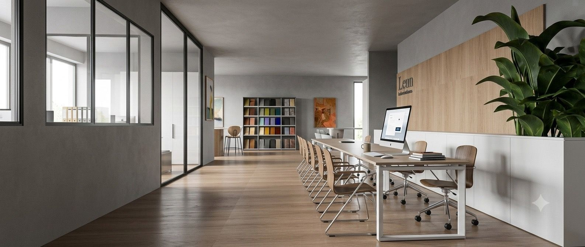

Cada objeto en su sitio
Un buen vestidor no se ve: se siente cada mañana, en el gesto de abrir una puerta y encontrarlo todo donde debía estar. En Leun Estudio diseñamos vestidores y armarios a medida en Donostia-San Sebastián que aprovechan cada centímetro y convierten el orden en arquitectura.
Sistemas que definen el espacio
Interiores en madera o textil, iluminación integrada que se enciende al abrir, cajoneras con divisores, zapateros extraíbles, barras descendentes: el detalle como forma de cuidado. Todo fabricado a medida por Saitra con los mismos acabados de nuestras cocinas, para que la casa entera hable un mismo idioma.
Del armario empotrado al vestidor abierto
Trabajamos armarios integrados en obra, vestidores en L o en U, cabinas abiertas tipo boutique y frentes de puerta que desaparecen en la pared. Empezamos siempre por lo que guardas — nunca por el módulo de catálogo — y diseñamos desde ahí hacia fuera.
¿La reforma va más allá del vestidor? Mira nuestro proyecto completo o los proyectos de cocina.